Helle, inspirierende Arbeitsumgebung mit ergonomischen Möbeln und schnellem WiFi für produktives Arbeiten.
Meeting Räume
Professionell ausgestattete Besprechungsräume für Teams und Kundenmeetings mit modernster Technik.
Vibrante Community
Netzwerken Sie mit lokalen und internationalen Professionals bei unseren regelmäßigen Events.
Kulturelle Highlights
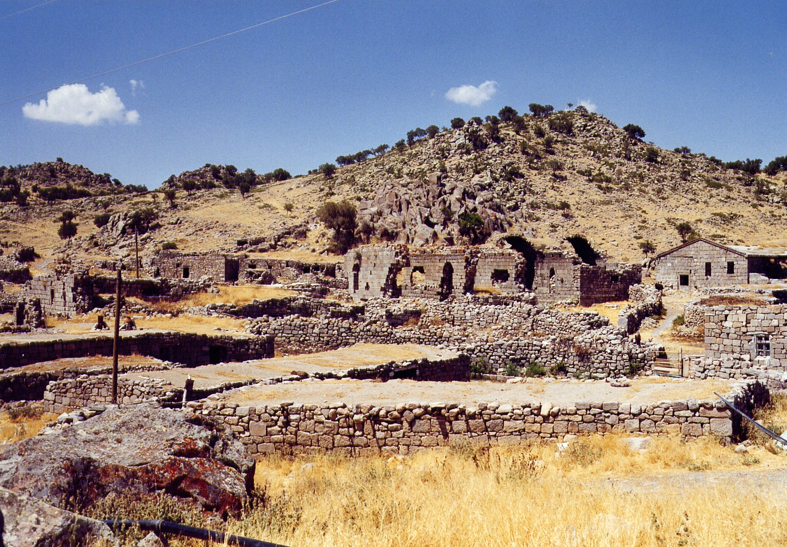
Binbir Kilise („Tausendundeine Kirche“) bei Madenşehir
Dies ist einer der wichtigsten byzantinischen Ruinenorte in der Türkei. Es handelt sich um eine ausgedehnte Siedlung mit den Überresten zahlreicher Kirchen, Kapellen, Zisternen und Wohnhäuser auf einem Hügelplateau. Das Gebiet war ein bedeutendes religiöses und städtisches Zentrum zwischen dem 8. und 11. Jahrhundert. Die Ruinen liegen in einer spektakulären, einsamen Landschaft. Besonders beeindruckend sind die Große Kirche und die Zentralkirche. Perfekt für eine Halbtagestour. Es vermittelt das Gefühl, eine verlorene Welt entdeckt zu haben, abseits der Touristenströme. Ideal für Geschichtsinteressierte und Fotografen.
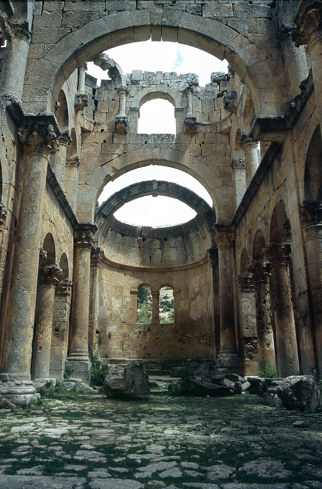
Die Alahan Klosteranlage (Alahan Manastırı)
Eine atemberaubende byzantinische Klosteranlage aus dem 5. Jahrhundert, die an einer steilen Felswand klebt. Ein Meisterwerk frühchristlicher Architektur und ein UNESCO-Weltkulturerbe-Kandidat. Die Lage ist absolut spektakulär mit Blick ins Tal. Zwei gut erhaltene Kirchen, eine Taufkapelle, unterirdische Zisternen und kunstvoll verzierte Portale. Der Engelsfries an der Hauptkirche ist weltberühmt. Ein Muss für alle, die sich für Architektur und Geschichte interessieren. Die Anlage ist leicht von Karaman aus zu erreichen und kann mit einem Besuch in Mut (dem antiken Claudiopolis) verbunden werden.
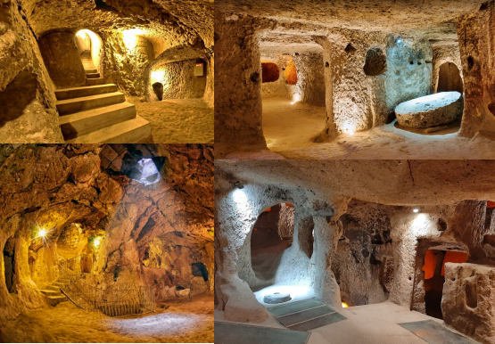
Derinkuyu – Betreten Sie eine verborgene Welt unter der Erde
Tauchen Sie ein in eines der erstaunlichsten architektonischen Wunder der Menschheit, die unterirdische Stadt Derinkuyu – ein Labyrinth aus Geheimnissen, Glauben und unglaublichem Überlebenswillen. Stellen Sie sich eine ganze Stadt vor, die nicht in den Himmel, sondern 85 Meter tief in den vulkanischen Fels hineinragt. Derinkuyu („tiefer Brunnen“) ist kein Mythos, sondern Realität und ein Höhepunkt jeder Reise nach Kappadokien.
Erbaut von frühen Christen war diese gigantische Anlage ein Schutzort vor Verfolgung. Bis zu 20.000 Menschen fanden hier mit ihrem gesamten Hab und Gut, ihrem Vieh und ihrer Kirche Platz. Erkunden Sie ein Labyrinth aus Wohnräumen, Küchen, Weinkellern, Ställen und Gebetsstätten – alles verbunden durch ein komplexes System von Tunneln und belüftet durch ingeniously angelegte Luftschächte.
Schließen Sie für einen Moment die Augen und spüren Sie die Geschichte: Hier unten, im Schein der Fackeln, pulste einst das Leben. Die massiven, tonnenschweren Steintüren, mit denen die einzelnen Etagen von innen versiegelt werden konnten, zeugen von einem unbeugsamen Willen, den Glauben und die Gemeinschaft zu bewahren.
Ein Besuch in Derinkuyu ist mehr als nur Sightseeing – es ist eine Zeitreise in eine Epoche, in der sich der Mensch die unwirtlichste Umgebung zu einem sicheren Zuhause machte.
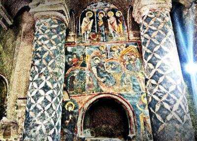
Zufluchtsort
Kappadokien wurde über Jahrhunderte zu einem Schutzraum für verfolgte Christen (zuerst vor Rom, dann vor arabischen Invasionen), was zur Entstehung der Höhlenkirchen und unterirdischen Städte führte. Später wurde es auch ein Zentrum muslimischer Geistlicher. Kappadokien ist mehr als eine bizarre Mondlandschaft – es ist ein lebendiges Geschichtsbuch. Seine Narrative formten sich im Schatten großer Reiche: von den alten Hethitern über die persischen Satrapen bis zu den Römern.
Sein wahrer historischer Kern aber entsprang der Verbindung von einzigartiger Geologie und tiefem Glauben. Die weichen Tuffsteinfelsen wurden zum Schutzraum für frühe Christen, die ganze unterirdische Städte wie Derinkuyu schufen und atemberaubende Höhlenkirchen mit farbenprächtigen Fresken meißelten.
Später webten seldschukische und osmanische Eroberer ihr kulturelles Erbe in diesen Teppich ein, bereichert durch die Weisheit der Derwische. Kappadokien ist nicht nur ein Ort zum Sehen, sondern einer, um die Schichten der Zeit selbst zu berühren.
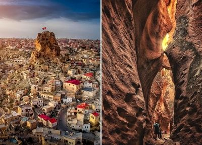
Eine Landschaft wie von einem anderen Planeten
Die ikonischen "Feenkamine", weiten Täler und bizarren Felsformationen Kappadokiens sind das Werk uralter Vulkane und millionenjahrelanger Erosion. Diese einzigartige Geologie ist nicht nur atemberaubend schön, sondern bildete auch die Grundlage für alles, was folgte: Der weiche Tuffstein ermöglichte es den Menschen, sich Höhlenwohnungen, ganze unterirdische Städte und kunstvolle Kirchen direkt in den Fels zu hauen. Hier ist die Landschaft nicht nur Hintergrund – sie ist der Hauptdarsteller.
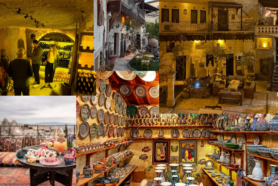
Lebendiges Kunsthandwerk & lokale Gastfreundschaft in Kappadokien
Das uralte Handwerk der Töpferei in Avanos
Die Stadt Avanos, am Ufer des längsten Flusses der Türkei, dem Kızılırmak („Roter Fluss“), gelegen, ist das unbestrittene Zentrum der Töpferei. Dieses Handwerk wird hier seit über 4000 Jahren, seit der Zeit der Hethiter, ununterbrochen ausgeübt.
Der rote Ton: Das einzigartige, rötliche Sediment des Kızılırmak gibt dem Ton seine charakteristische Farbe und hervorragende Qualität.
Traditionelle Werkstätten: Besuchen Sie eine der vielen familiengeführten Werkstätten, die oft in jahrhundertealten Höhlen untergebracht sind. Hier können Sie Meistern über die Schulter schauen, wie sie auf der Töpferscheibe – angetrieben nur durch ihre Fußkraft – Gefäße formen, die dann in traditionellen Lehmöfen gebrannt werden.
Erlebnis für Gäste: Viele Werkstätten bieten Töpferkurse an. Ein unvergessliches Erlebnis, bei dem Ihre Gäste selbst versuchen können, aus einem Klumpen Ton ein Kunstwerk zu formen.
Kulinarische Schätze: Vom Feld in die Höhlenküche
Die kulinarische Tradition Kappadokiens ist so bodenständig und authentisch wie seine Landschaft. Die vulkanischen Böden und das kontinentale Klima verleihen den Produkten einen intensiven Geschmack.
Locally Sourced: Die Küche basiert auf dem, was die Region hergibt: Linsen, Kichererbsen, Weizen, Aprikosen, Walnüsse und natürlich Weintrauben.
Spezialitäten, die man probieren muss:
Testi Kebab: Das absolute Highlight. Lammfleisch und Gemüse werden in einem Tontopf geschmort, der bei Tisch feierlich vor den Gästen mit einem Hammer geöffnet wird.
Soba Çorbası: Eine nahrhafte Suppe aus geröstetem Weizen und Joghurt.
Dolma & Sarma: Mit einer regionalen Vielfalt an Füllungen.
Pekmez: Ein süßer, dickflüssiger Sirup aus eingekochten Trauben oder Maulbeeren, der zum Frühstück mit Butter (Kaymak) serviert wird.
Höhlenrestaurants: Das ultimative kulinarische Erlebnis ist eine Mahlzeit in einem Höhlenrestaurant. Die dicken Steinwände sorgen für eine perfekte Temperatur und eine einzigartige, gemütliche Atmosphäre.
Der Wiederaufstieg des Weinbaus
Der Weinbau in Kappadokien ist ältester Tradition – bereits die Hethiter kelterten hier Wein. In der byzantinischen Zeit war Wein für die christliche Liturgie unerlässlich. Heute erlebt der Weinbau eine Renaissance.
Einheimische Rebsorten: Die Region ist bekannt für ihre autochthonen Sorten, die es sonst nirgends gibt:
Öküzgözü ("Ochsenauge"): Eine fruchtige, tiefrote Traube.
Kalecik Karası: Ergiebt einen eleganten, leichten Rotwein.
Emir: Ein spritziger, frischer Weißwein, perfekt für die heißen Tage.
Höhlenkellereien: Viele Winzer nutzen die natürlichen Höhlen als Kellereien. Das konstante, kühle Klima ist ideal für die Lagerung und Reifung der Weine.
Weinproben: Ein Besuch in einem Weingut mit Verkostung ist ein Muss für jeden Genießer.
Die Herzlichkeit der Menschen: Misafirperverlik
Das türkische Konzept der Misafirperverlik (Gastfreundschaft) ist in Kappadokien besonders spürbar. Gäste werden als "Gesandte Gottes" betrachtet. Diese Gastfreundschaft ist keine Dienstleistung, sondern eine echte Herzensangelegenheit. Man wird oft zum Tee eingeladen, plaudert mit den Handwerkern und fühlt sich willkommen.
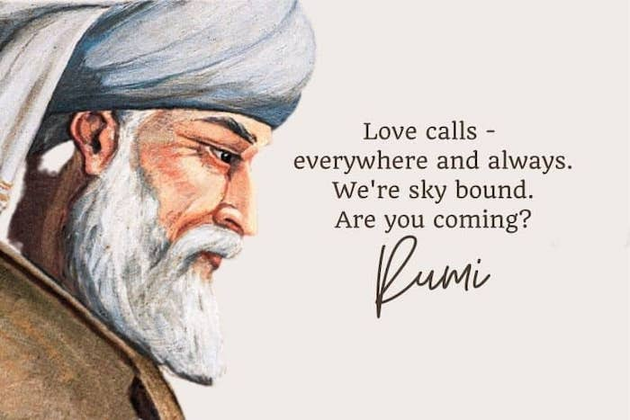
Mevlanas Vergessene Hauptstadt
Während Konya als das endgültige Zuhause von Mevlana Celaleddin Rumi berühmt ist, ist Karaman sein Zuhause der Prägung – der Ort, wo der Samen seiner spirituellen Revolution gesät wurde.
Das "andere" Mekka": Bevor Mevlana nach Konya zog, lebte er 7 Jahre lang (ca. 1222-1228 n. Chr.) in Karaman (damals bekannt als Larende). Diese Jahre waren entscheidend für seine Entwicklung.
Familienort: Seine Mutter, Mümine Hatun, starb hier und wurde begraben. Ihr Grab (Mümine Hatun Türbesi) in Karaman ist bis heute eine wichtige Pilgerstätte und ein Ort der Stille im Gegensatz zum Trubel in Konya.
Hochzeit: Mevlana heiratete hier seine Frau, Gevher Hatun. Sein ältester Sohn, Sultan Veled, wurde in Karaman geboren.
Warum das wichtig ist: Ein Besuch in Karaman bietet daher eine intimere, reflexivere Perspektive auf Mevlana. Man spürt hier weniger den Heiligen und mehr den Menschen, den Familienvater und den jungen Gelehrten auf seiner Reise.
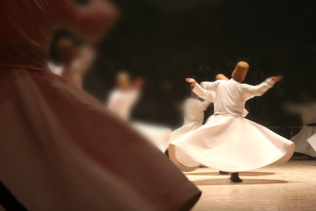
Der Semâ – Der Tanz der Derwische
Eine spirituelle Reise: Der Semâ ist eine physische Darstellung der kosmischen Reise der Seele. Jedes Detail ist symbolisch:
Der hohe Filzhut (Sikke) symbolisiert den Grabstein des Egos.
Der weite weiße Rock (Tennure) steht für das Leichentuch des Egos.
Das Auswerfen des schwarzen Umhangs (Hırka) symbolisiert die Befreiung von weltlichen Bindungen.
Die Drehung mit dem rechten Handflächen nach oben (um Segen zu empfangen) und der linken nach unten (um Segen zur Erde zu leiten) repräsentiert die Rolle des Menschen als Vermittler zwischen Himmel und Erde.
Ziel der Praxis: Der Zustand der völligen Hingabe an Gott (Fanā'), bei dem das eigene Ego ausgelöscht wird und nur die göttliche Liebe übrig bleibt.
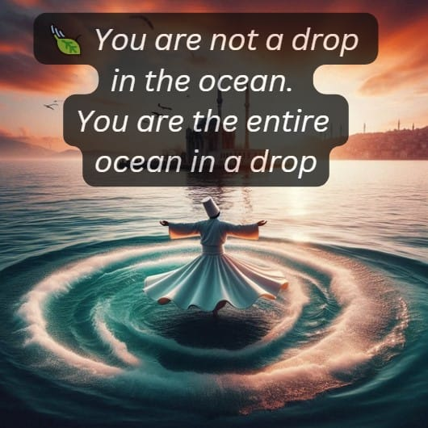
Die Sufi-Philosophie: Die Lehre der Liebe
Die Philosophie, die dem Derwischtanz zugrunde liegt, ist Mevlanas Lehre, die über alle religiösen Grenzen hinwegspricht.
Das Herzstück: Universale Liebe & Toleranz: Mevlanas zentrale Botschaft ist die bedingungslose Liebe zu allem Geschaffenen, weil alles ein Reflexion des Göttlichen ist. Sein berühmtestes Zitat fasst dies zusammen:
"Komm, wer du auch bist, komm wieder. / Ob Ungläubiger, Götzendiener oder Feueranbeter, komm wieder. / Unser Herzens ist keine Stätte der Verzweiflung. / Selbst wenn du hundert Mal dein Gelübde gebrochen hast, komm wieder."
Die Suche nach der Wahrheit: Sufismus ist der Weg der inneren Suche nach der göttlichen Wahrheit, die jenseits von dogmatischen Lehren liegt. Es geht um persönliche Erfahrung (Dhawq - "Schmecken") statt nur um theoretisches Wissen.
Musik & Poesie: Mevlana sah in Musik (Ney, die Schilfflöte) und Poesie (sein monumentales Werk Mesnevi) die direktesten Wege, das Herz zu öffnen und die Seele zu berühren. Die Klage der Ney symbolisiert die Sehnsucht der Seele, zu ihrem Ursprung (Gott) zurückzukehren.
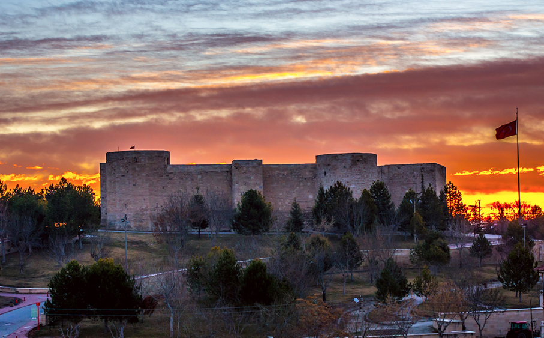
Karaman Burg: Die Wächterin der Ebene
Eine imposante Zitadelle, die über der Altstadt von Karaman thront. Ihre Ursprünge reichen bis in die antike Zeit zurück, wahrscheinlich zu den Hethitern oder früher.
Byzantinische & Seldschukische Zeit: Die Festung wurde in byzantinischer Zeit significantly ausgebaut und später von den Seldschuken erobert und weiter verstärkt.
Hauptstadt der Karamanoğulları: Im 13. Jahrhundert wurde die Festung zum machtvollen Symbol des Beyliks der Karamanoğulları, eines der mächtigsten türkischen Fürstentümer nach dem Fall der Seldschuken. Sie diente als militärisches Hauptquartier und Verwaltungszentrum.
Osmanische Zeit: Nach der Eroberung durch die Osmanen behielt die Festung ihre strategische Bedeutung bei.
Von den Zinnen der Burg hat man einen atemberaubenden Panoramablick über die gesamte Ebene von Karaman und auf das Taurusgebirge. Die Mauern erzählen von Jahrtausenden der Geschichte, der Eroberungen und der Verteidigung.
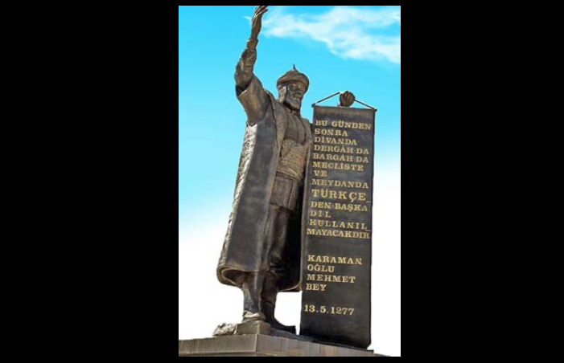
Der Geburtsort der türkischen Sprache
Dies ist die wichtigste und identitätsstiftende historische Tatsache für Karaman und ein nationales Symbol in der gesamten Türkei.
Das historische Ereignis: Im Jahr 1277 n. Chr. erließ der Herrscher der Karamanoğulları, Karamanoğlu Mehmet Bey, einen legendären Erlass (Ferman).
Der berühmte Erlass: "Şimden gerü hiç kimesne kapuda ve dîvânda ve meclisde ve seyranda Türkî dilinden gayrı dil söylemeye." („Von nun an soll niemand mehr in der Pforte, im Diwan, in der Versammlung und auf dem Feld eine andere Sprache als das Türkische sprechen.“)
Bedeutung:
Erster offizieller Status: Dies war das erste Mal in der Geschichte, dass Türkisch zur offiziellen Amts- und Staatssprache eines unabhängigen türkischen Reiches erklärt wurde. Zur selben Zeit wurde in anderen Beyliks und sogar bei den Osmanen noch Persisch als Sprache der Hofdichtung und Arabisch als Sprache der Religion und Wissenschaft bevorzugt.
Nationales Erbe: Aus diesem Grund wird Karamanoğlu Mehmet Bey in der heutigen Türkei als Held der nationalen Kultur und Sprache verehrt. Dies macht Karaman zum spirituellen Geburtsort der modernen türkischen Nationalsprache.
Gedenken: Jedes Jahr findet in Karaman am 13. Mai ein großes Fest zur türkischen Sprache statt, um dieses Ereignis zu feiern.
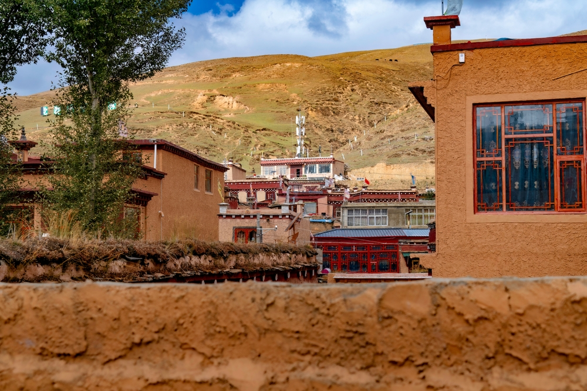
Die traditionellen Dörfer: Lebendige Architektur und Lebensart
EDie Dörfer in der Umgebung von Karaman sind keine Freilichtmuseen, sondern lebendige Zeugnisse einer jahrhundertealten anatolischen Lebensweise.
Steinarchitektur: Die Dörfer sind geprägt von traditionellen Steinhäusern, die aus dem lokal vorkommenden Stein erbaut sind. Diese Architektur ist perfekt an das kontinentale Klima angepasst: kühl im Sommer, gut isoliert im Winter.
Beispiele und Charakter:
Taşkale: Berühmt für seine in den Fels gehauenen Getreidespeicher, die bis heute genutzt werden. Ein einzigartiges Beispiel für ländliche Ingenieurskunst und Vorratshaltung.
Bucakkışla, İlisıra, Kalaba: Weitere typische Dörfer, in denen das alte Handwerk, die Landwirtschaft (oft mit Pferdekarren) und eine tiefe Gemeinschaft verbunden sind.
Yollastı (Madenşehir): Liegt direkt neben der antiken Stätte Binbir Kilise und ist selbst ein historisches Dorf mit byzantinischen und seldschukischen Spuren.
Bedeutung für den Besucher: Ein Besuch in diesen Dörfern ist eine Reise in die Seele Anatoliens. Es geht um Gastfreundschaft (misafirperverlik), um den Geruch von selbstgebackenem Fladenbrot (yufka) und das authentische Leben abseits der touristischen Pfade. Es ist die perfekte Verbindung von Natur, Geschichte und Kultur.
Aktivitäten & Veranstaltungen
Türkisch-Sprachkurse
Lernen Sie Türkisch in der Stadt, wo die moderne türkische Sprache geboren wurde.
Kochworkshops
Lernen Sie traditionelle Gerichte der Region von lokalen Köchen zubereiten.
Geführte Wanderungen
Entdecken Sie die Natur- und Kulturhighlights der Region mit unseren Experten.
Traditionelle Übernachtung
Steinhäuser mit Charme
Übernachten Sie in restaurierten traditionellen Steinhäusern mit modernem Komfort.
Idyllische Innenhöfe
Entspannen Sie in den typischen Innenhöfen mit Brunnen und traditioneller Atmosphäre.
Hausgemachte Küche
Genießen Sie Frühstück mit regionalen Produkten und hausgemachten Spezialitäten.
Unsere Pakete
Tagespass
€42/Tag
8h Arbeitsplatz
Schnelles WiFi
Kaffee & Tee
Gemeinschaftsbereiche
Beliebt
Wochenpass
€140/Woche
5 Tage 24/7 Coworking
Meetingraum (2h)
Kaffee, Tee & Snacks
Community-Events
Monatspass
€490/Monat
24/7 Zugang
Meetingraum (2h)
Drucker & Scanner
Exklusive Events
10% Rabatt auf Touren
Kappadokien Tour
€490/Person
Ganztägige geführte Tour
Transport ab Karaman
Eintritt zu Höhlenkirchen
Mittagessen inklusive
Empfohlen
Pamukkale Erlebnis
€880/Person
2-tägige Tour
Übernachtung inklusive
Führung durch Hierapolis
Thermalbad-Eintritt
Konya & Derwische
€470/Person
Mevlana Museum
Derwisch-Tanz-Vorführung
Traditionelles Abendessen
Fachkundiger Guide
Work & Explore
€690/Woche
5 Tage Coworking
1 Tag Kappadokien Tour
Meetingraum (1h)
Willkommenspaket
Bestseller
Digital Nomad Paket
€1050/Monat
Unbegrenztes Coworking
2 kulturelle Touren
2 Übernachtungen
Persönlicher Assistent
24/7 Zugang
Premium Experience
€1980/Monat
Privater Arbeitsplatz
3 kulturelle Touren
3 Übernachtungen
Flughafentransfer
Persönlicher Assistent
Spezialangebot für mobile Nutzer!
Buchen Sie jetzt und erhalten Sie 10% Rabatt auf alle Pakete.
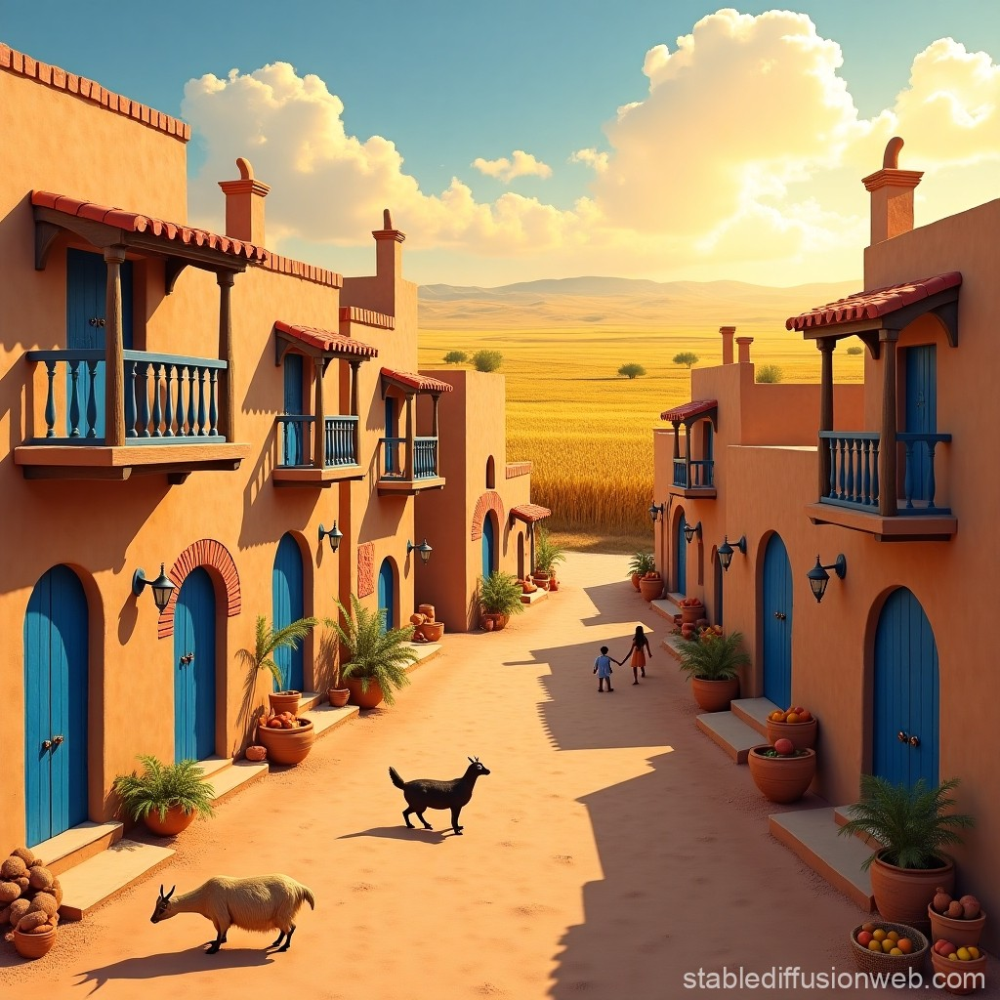
Ihre Reservierung bei BM-Coworking
Arbeiten & Kultur erleben in Karaman
Reservierung abschließen
Überprüfen Sie Ihre Reservierung
Bitte bestätigen Sie Ihre Angaben
Reservierungsdetails
Paket:
Name:
Email:
Telefon:
Personen:
Check-in:
Check-out:
Anforderungen:
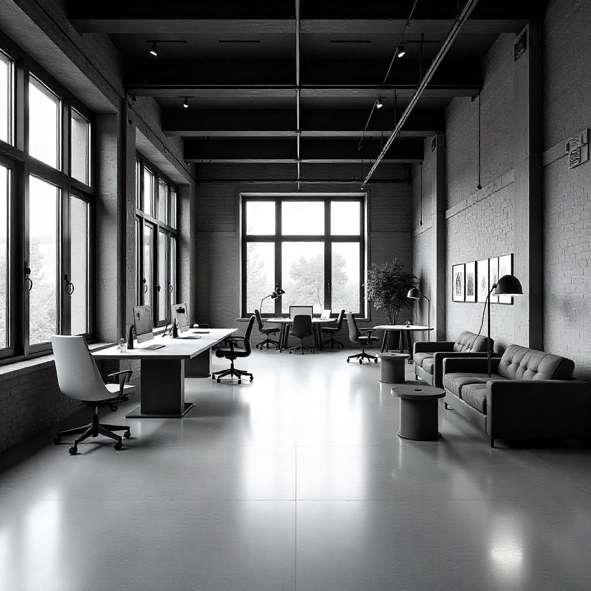
Vielen Dank für Ihre Reservierung!
Wir freuen uns auf Ihren Besuch
Reservierung erfolgreich!
Paket:
Reservierungsnummer:
Check-in:
Check-out:
Nächte:
Personen:
Eine Bestätigung wurde an Ihre E-Mail-Adresse gesendet.
Das sagen unsere Gäste
Der perfekte Ort, um produktiv zu arbeiten und gleichzeitig die faszinierende Kultur der Türkei kennenzulernen. Die Kombination aus modernem Coworking Space und authentischen kulturellen Erlebnissen ist einzigartig.
Sarah M.
Digital Nomad aus Deutschland
Die geführten Touren nach Kappadokien und Pamukkale waren die Highlights meines Aufenthalts. Die Organisation war perfekt und wir hatten genug Zeit, um alles zu erkunden.
Thomas K.
Freelancer aus Österreich
Die Übernachtung im traditionellen Dorf war ein unvergessliches Erlebnis. Die Gastfreundschaft und die authentische Atmosphäre haben mich tief beeindrucket.